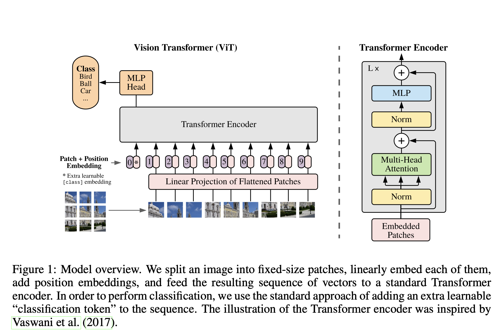
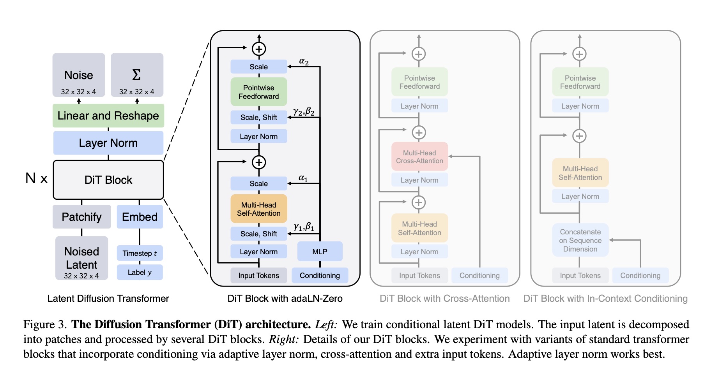

ViT and DiT¶
Quick map¶
- ViT (Vision Transformer): use the Transformer encoder (bidirectional self-attention; no causal mask) over a sequence of image patch tokens for classification and representation learning.
- DiT (Diffusion Transformer): (standard DiT) also uses an encoder-style Transformer backbone (bidirectional self-attention; no causal mask) inside a diffusion model to predict noise / velocity / score-like targets over latent/image tokens.
If you’re coming from the LLM note, see the self-attention recap in transformer.md.
ViT (Vision Transformer)¶
Core idea¶
- Tokenization: split an image into fixed-size patches (e.g., 16×16), flatten each patch, and project to an embedding dimension.
- Add positional embeddings (learned or sinusoidal-like), then run a Transformer encoder.
- Use a special classification token
[CLS](original ViT) or pooled token features for classification.
A common abstraction:
- Patches: \(x \in \mathbb{R}^{H\times W\times C}\) → \(N\) patches → \(X \in \mathbb{R}^{N\times d}\)
- Encoder: \(Z = \mathrm{Encoder}(X + \mathrm{PosEmbed})\)
- Class head: \(\hat y = \mathrm{head}(Z_{\mathrm{cls}})\) (if using
[CLS])

What to pay attention to (implementation details)¶
- Patch embedding layer: typically
Conv2d(kernel=p, stride=p)is equivalent to patchify + linear. - Positional embeddings: learned absolute embeddings are common; resizing/interpolation is needed when changing resolution.
- Regularization and data: ViT often needs strong augmentation and large-scale pretraining to match CNN baselines.
Minimal code sketch (patch embedding + tokens):
import torch
import torch.nn as nn
class PatchEmbed(nn.Module):
"""Image -> patch tokens using a strided conv."""
def __init__(self, in_chans=3, d_model=768, patch_size=16):
super().__init__()
self.patch_size = patch_size
self.proj = nn.Conv2d(in_chans, d_model, kernel_size=patch_size, stride=patch_size)
def forward(self, x):
# x: (B, C, H, W) with H,W divisible by patch_size
x = self.proj(x) # (B, d_model, H/p, W/p)
x = x.flatten(2).transpose(1, 2) # (B, N, d_model)
return x
def make_vit_tokens(x, patch_embed, cls_token, pos_embed):
"""Returns token sequence ready for a Transformer encoder."""
tok = patch_embed(x) # (B, N, d)
B = tok.shape[0]
cls = cls_token.expand(B, -1, -1) # (B, 1, d)
tok = torch.cat([cls, tok], dim=1) # (B, 1+N, d)
tok = tok + pos_embed[:, : tok.shape[1]]
return tok
# Example shapes (not a full model):
# x = torch.randn(2, 3, 224, 224)
# patch = PatchEmbed(in_chans=3, d_model=192, patch_size=16)
# cls_token = nn.Parameter(torch.zeros(1, 1, 192))
# pos_embed = nn.Parameter(torch.zeros(1, 1 + (224 // 16) ** 2, 192))
# tokens = make_vit_tokens(x, patch, cls_token, pos_embed)
Minimal attention block (ViT encoder block):
import torch
import torch.nn as nn
class ViTEncoderBlock(nn.Module):
"""Pre-LN encoder block used in most ViT-style implementations."""
def __init__(self, d_model, n_heads, d_ff, dropout=0.0):
super().__init__()
self.ln1 = nn.LayerNorm(d_model)
self.attn = nn.MultiheadAttention(
embed_dim=d_model,
num_heads=n_heads,
dropout=dropout,
batch_first=True, # x: (B, N, C)
)
self.ln2 = nn.LayerNorm(d_model)
self.mlp = nn.Sequential(
nn.Linear(d_model, d_ff),
nn.GELU(),
nn.Dropout(dropout),
nn.Linear(d_ff, d_model),
nn.Dropout(dropout),
)
def forward(self, x):
# x: (B, N, d_model)
# Residual pathway (same ResNet-style "passway"): x <- x + F(x)
attn_out, _ = self.attn(self.ln1(x), self.ln1(x), self.ln1(x), need_weights=False)
x = x + attn_out
x = x + self.mlp(self.ln2(x))
return x
Minimal full ViT encoder skeleton (patch embed -> blocks -> head):
import torch
import torch.nn as nn
class ViT(nn.Module):
def __init__(
self,
image_size=224,
patch_size=16,
in_chans=3,
n_classes=1000,
d_model=768,
depth=12,
n_heads=12,
d_ff=3072,
dropout=0.0,
):
super().__init__()
assert image_size % patch_size == 0
n_patches = (image_size // patch_size) ** 2
self.patch = PatchEmbed(in_chans=in_chans, d_model=d_model, patch_size=patch_size)
self.cls_token = nn.Parameter(torch.zeros(1, 1, d_model))
self.pos_embed = nn.Parameter(torch.zeros(1, 1 + n_patches, d_model))
self.drop = nn.Dropout(dropout)
self.blocks = nn.ModuleList(
[ViTEncoderBlock(d_model, n_heads, d_ff, dropout=dropout) for _ in range(depth)]
)
self.norm = nn.LayerNorm(d_model)
self.head = nn.Linear(d_model, n_classes)
def forward(self, x):
# x: (B, C, H, W)
tok = make_vit_tokens(x, self.patch, self.cls_token, self.pos_embed)
tok = self.drop(tok)
for blk in self.blocks:
tok = blk(tok)
tok = self.norm(tok)
cls = tok[:, 0] # [CLS]
return self.head(cls)
# Example:
# model = ViT(image_size=224, patch_size=16, d_model=192, depth=6, n_heads=3, d_ff=768)
# x = torch.randn(2, 3, 224, 224)
# logits = model(x)
References (paper + code)¶
- Paper: https://arxiv.org/abs/2010.11929 (Dosovitskiy et al., 2020, An Image is Worth 16x16 Words)
- Code (Google research): https://github.com/google-research/vision_transformer
- Code (PyTorch models / baseline impls): https://github.com/rwightman/pytorch-image-models (timm)
DiT (Diffusion Transformer)¶
Core idea¶
Diffusion models learn to denoise a noisy sample \(x_t\) at time \(t\). A DiT replaces the usual U-Net backbone with a Transformer that operates on tokenized image/latent representations.
Typical training target choices include (depending on formulation):
- Predict noise \(\epsilon\)
- Predict velocity \(v\)
- Predict the clean sample \(x_0\)
The Transformer is conditioned on the diffusion timestep \(t\) (and sometimes on class labels / text embeddings). Conditioning is often injected via adaptive normalization (FiLM/AdaLN-style) rather than plain concatenation.

What to pay attention to (implementation details)¶
- Tokenization: operate in pixel space or (more common) in VAE latent space (Stable Diffusion-style).
- Timestep conditioning: how \(t\) embeds and modulates blocks (often via AdaLN).
- Attention pattern: full attention vs windowed/local attention for high-resolution.
- Objective choice: \(\epsilon\) vs \(v\) parameterization and how it affects stability/sampling.
Minimal code sketch (DDPM-specific parts: timestep + conditioning injection):
import math
import torch
import torch.nn as nn
def timestep_embedding(t, dim, max_period=10000):
"""Sinusoidal embedding for diffusion timesteps.
t: (B,) int/float tensor
Returns: (B, dim)
"""
half = dim // 2
freqs = torch.exp(
-math.log(max_period) * torch.arange(0, half, device=t.device, dtype=torch.float32) / half
)
args = t.float()[:, None] * freqs[None]
emb = torch.cat([torch.cos(args), torch.sin(args)], dim=-1)
if dim % 2 == 1:
emb = torch.cat([emb, torch.zeros_like(emb[:, :1])], dim=-1)
return emb
class AdaLN(nn.Module):
"""Adaptive LayerNorm: produces per-channel scale/shift from a condition vector."""
def __init__(self, d_model, cond_dim):
super().__init__()
self.ln = nn.LayerNorm(d_model, elementwise_affine=False)
self.to_scale_shift = nn.Linear(cond_dim, 2 * d_model)
def forward(self, x, cond):
# x: (B, N, C), cond: (B, cond_dim)
x = self.ln(x)
s, b = self.to_scale_shift(cond).chunk(2, dim=-1) # (B, C), (B, C)
return x * (1 + s[:, None, :]) + b[:, None, :]
class DiTBlock(nn.Module):
"""Encoder-style Transformer block with timestep/class conditioning via AdaLN.
This is the key structural difference vs a plain ViT block: the diffusion timestep (and optional semantic condition)
modulates normalization inside each block.
"""
def __init__(self, d_model, n_heads, d_ff, cond_dim, dropout=0.0):
super().__init__()
self.ada1 = AdaLN(d_model, cond_dim)
self.attn = nn.MultiheadAttention(d_model, n_heads, dropout=dropout, batch_first=True)
self.ada2 = AdaLN(d_model, cond_dim)
self.mlp = nn.Sequential(
nn.Linear(d_model, d_ff),
nn.GELU(),
nn.Dropout(dropout),
nn.Linear(d_ff, d_model),
nn.Dropout(dropout),
)
def forward(self, x, cond):
# x: (B, N, C)
a, _ = self.attn(self.ada1(x, cond), self.ada1(x, cond), self.ada1(x, cond), need_weights=False)
x = x + a
x = x + self.mlp(self.ada2(x, cond))
return x
class DiT(nn.Module):
"""Minimal DiT-like backbone (latent tokens -> denoising prediction)."""
def __init__(self, d_model=768, depth=12, n_heads=12, d_ff=3072, n_classes=None, time_dim=256, dropout=0.0):
super().__init__()
cond_dim = time_dim
self.time_mlp = nn.Sequential(
nn.Linear(time_dim, cond_dim),
nn.SiLU(),
nn.Linear(cond_dim, cond_dim),
)
self.class_emb = nn.Embedding(n_classes, cond_dim) if n_classes is not None else None
self.blocks = nn.ModuleList(
[DiTBlock(d_model, n_heads, d_ff, cond_dim=cond_dim, dropout=dropout) for _ in range(depth)]
)
self.norm = nn.LayerNorm(d_model)
self.out = nn.Linear(d_model, d_model) # placeholder: map tokens back to token-space prediction
def forward(self, x_tokens, t, y=None):
# x_tokens: (B, N, C) tokens of x_t (often VAE latents patchified)
cond = self.time_mlp(timestep_embedding(t, self.time_mlp[0].in_features))
if self.class_emb is not None and y is not None:
cond = cond + self.class_emb(y)
for blk in self.blocks:
x_tokens = blk(x_tokens, cond)
x_tokens = self.norm(x_tokens)
return self.out(x_tokens)
# Notes:
# - In a real diffusion model, x_tokens represent a noised sample x_t, and the output is interpreted as epsilon/v/x0 in the same space.
# - The *DDPM-specific* part is the conditioning on t (and optional y/text) + the training/sampling process around this network.
Quick contrast vs VGG/CNNs (why this is a “structure” story):
- VGG/CNNs bake in strong inductive biases (locality + translation equivariance via convolutions). ViT/DiT rely more on data/scale and attention’s global mixing.
- ViT is usually a single-pass supervised encoder (classification/representation). DiT is used inside an iterative denoising procedure (DDPM/DDIM sampling), so the same network is called many times.
- The key DiT-specific knobs are timestep embedding \(t\), how conditioning is injected (AdaLN/FiLM vs cross-attention vs extra tokens), and which target you predict (\(\epsilon\)/\(v\)/\(x_0\)).
References (paper + code)¶
- Paper: https://arxiv.org/abs/2212.09748 (Peebles & Xie, 2022, Scalable Diffusion Models with Transformers)
- Code (official-ish / common reference): https://github.com/facebookresearch/DiT
- Video: https://www.youtube.com/watch?v=vXtapCFctTI
File references (inside this repo)¶
- LLM/AR Transformer background: transformer.md
- Figures used by the Transformer note: assets/figures/
Code references (external)¶
- ViT implementations: timm ViT variants and Google’s JAX reference (links above)
- DiT implementation: Meta’s DiT repo (link above)
Next topics to expand (pick one per installment)¶
- ViT patch embedding math + positional embedding resizing
- ViT pretraining recipes (augmentation, regularization, distillation)
- Diffusion basics: forward/noise schedule and what the model predicts (\(\epsilon\), \(v\), \(x_0\))
- DiT conditioning (AdaLN/FiLM) and why U-Nets were dominant historically
- Sampling: DDPM/DDIM and classifier-free guidance (CFG)